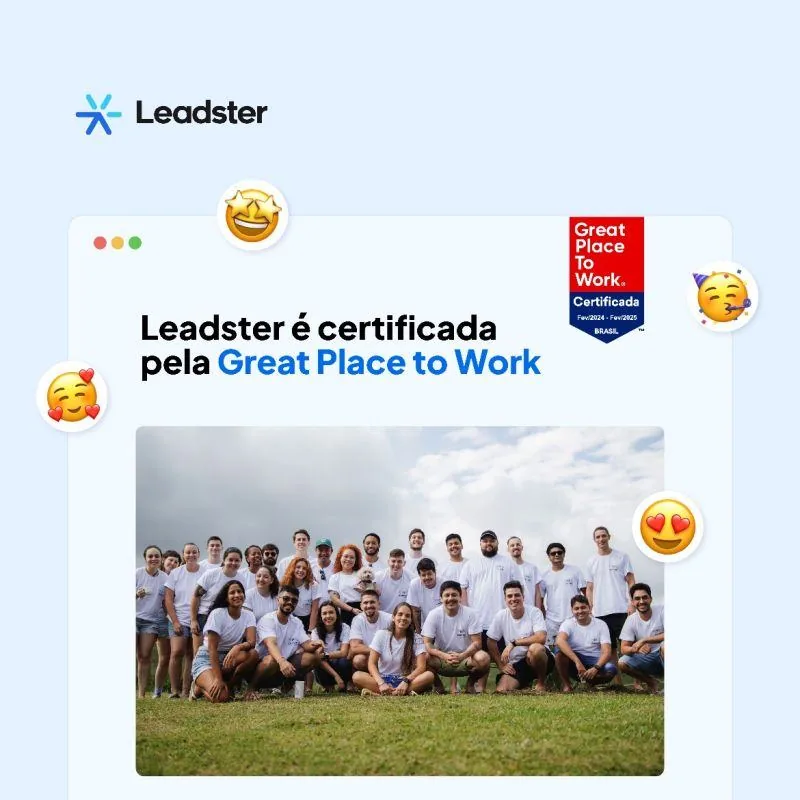

Sou o Matheus Oliveira, Product Designer, UX/UI Designer que busca, através da criatividade, criar soluções simples.

01 / Trajetória
+7 anos adquirindo experiência com Design
Desde a minha formação como Designer em Produto, venho crescendo e me desenvolvendo na criação de soluções digitais. Além disso, venho trabalhando em mim mesmo e em como utilizar a minha criatividade e empatia nos negócios.
Nos últimos 5 anos, atuei como Product Designer na Leadster, com demandas de Discovery, negócios, suporte, visual design, gerenciamento de backlog, priorização, contato com clientes e apresentações de resultados.
Fico honrado em ter trabalhado em três produtos durante esse período: uma solução de chatbot para websites, uma solução de IA para lojas virtuais e agentes de IA para WhatsApp. Em todas eu era o responsável principal pela criação de toda a experiência visual, por simplificar jornadas, priorizar tarefas que iam para a sprint e acompanhar as métricas de uso.
- 2023 – 2026 Leadster Product Designer Pleno
- 2021 – 2023 Leadster UX/UI Designer
- 2021 – 2021 Ziko UX/UI Designer
- 2019 – 2021 Retina Web Designer Gráfico
- 2019 – 2019 Ober Estagiário
- Meu currículo
- Meu LinkedIn
Links a confirmar pelo titular (B3).
02 / Propósito
O meu propósito sempre foi dar o meu melhor e impactar positivamente.
Na minha carreira profissional me deparei com desafios diferentes, mas, em todos, utilizei o Design como a ferramenta que resolvia os problemas e gerava impacto. Sempre foi a melhor forma, pois, através do Design, consigo demonstrar o quanto entendo de pessoas (clientes e equipe) e quanto entendo de negócios, sempre priorizando o que gera resultado.
O Design é a minha vida, e é o que posso oferecer. Estou em busca de conexões que valorizem o Design, assim como eu também valorizo.